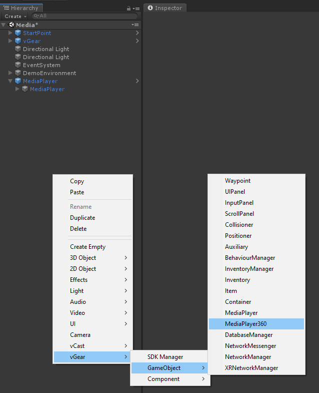
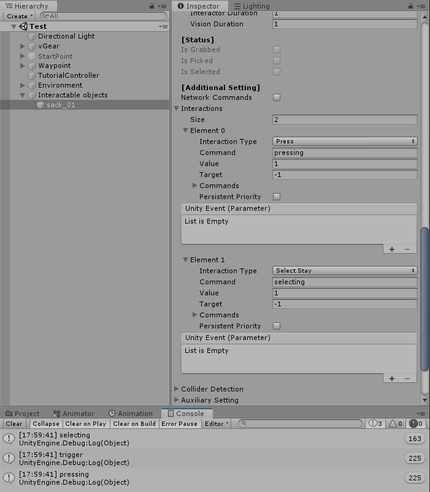
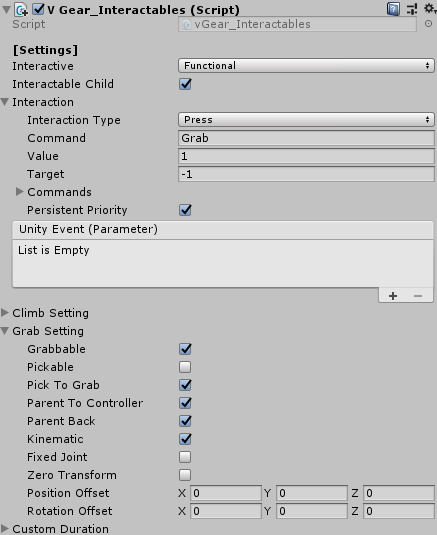
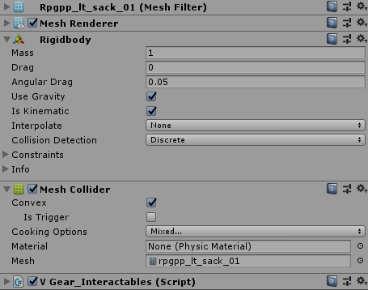
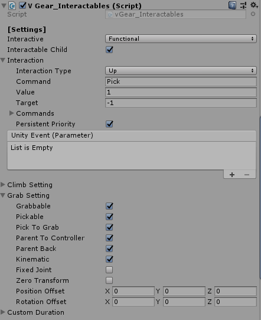
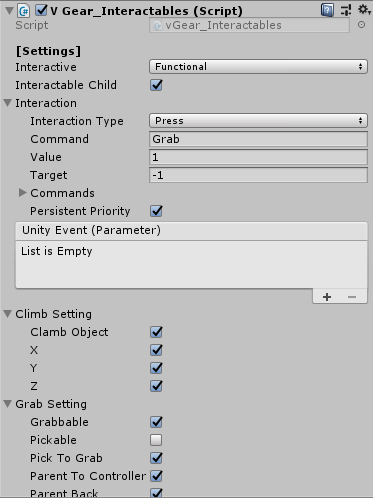

Interaction
This page describes using VotanicXR to interact with objects.
Interactable
The basic component for Interactable is V Gear_Interactables (Script), to interact between interactable gameobjects and the interactors. The default interactors are the Wand tool and Vision.
Right Click the game object, and select vGear > Component > Interactables+ to add the V Gear_Interactables (Script) component.
Interaction to Interactables
The interaction and condition can be set in the Interaction of [Settings], with the interaction type and response type. The response can be sending a Command or calling a Unity Event.
By default, you will see the color of the wand changed to green when it collides with interactable gameobjects, and changed to red when it is interacting, the wand setting is introduced in the chapter Quick Start.
The sample with the script is shown below.

To perform more interactions in one gameobject, you may set more interactions in Interactions in [Additional Setting]. The sample below print out the commands received in the Update function.

Grab Interactables
Besides triggering, grabbing an object and grab to interact with other objects is usual in VR development[Need English support]. You can follow the setting below to perform grabbing.
Set Interaction Type into
Pressand Command in toGrabin vGear Interactables. (Some controller keys is mapped with this, you may bind it in configurator if you need. Grip button is mapped to Grab for Vive Controller by default.)Check the Grabble option in the Grab Setting of [Setting].

Check the Convex option of the gameobject if using Mesh Collider.
Add the Rigidbody component to apply physic.

vGear have provided feature to Pick interactable that is similar to Grab.
Grab should keep pressing the key (or keep receiving Grab command), and ungrab by release the key.
Pick only require a Pick command to attach the object to hand, and unpick by received a Grab command once.
Pick and Grab are capable for a gameobject, the below shows the setting with both Grab and Pick.

The table below introduce the some common of Grab Setting.
| Grabbable | Decide the interactables can be grabbed or not. Capable with Pickable. |
| Pickable | Decide the interactables can be picked or not. Capable with Grabbable. |
| Pick To Grab | Able to change grab from pick so that the interactables can be ungrabbed. |
| Parent To Controller | Decide parent to controller or not. |
| Parent Back | Decide parent back to origin parent or not. |
Climb Interactables
VGear Interactables have provided a climb feature, players can climb and implement games such as zipline and rock climbing. The sample is shown below.
Set Interaction Type into
Pressand Command in toGrabin vGear Interactables.Check the Climb Object into true and corresponding x, y, z to be fixed in the [Climb Setting].
Check the Grabble option in Grab Setting of [Setting].

The script of the zipline. When the player is grabbing the moving zipline, player will be moved with the zipline.
public Transform Zipline;
readonly KeyCode[] inputKeys
= { KeyCode.R, KeyCode.F
, KeyCode.W, KeyCode.A, KeyCode.S, KeyCode.D };
readonly Vector3[] directions
= { Vector3.up, Vector3.down
, Vector3.forward, Vector3.left, Vector3.back, Vector3.right};
private void Update()
{
// Using WASDRF to control the movement of zipline
for (int i = 0 ; i < inputKeys.Length ; i++)
{
if (vGear.Input.KeyboardPress(inputKeys[i]))
{
Zipline.Translate(directions[i] * Time.deltaTime);
}
}
}